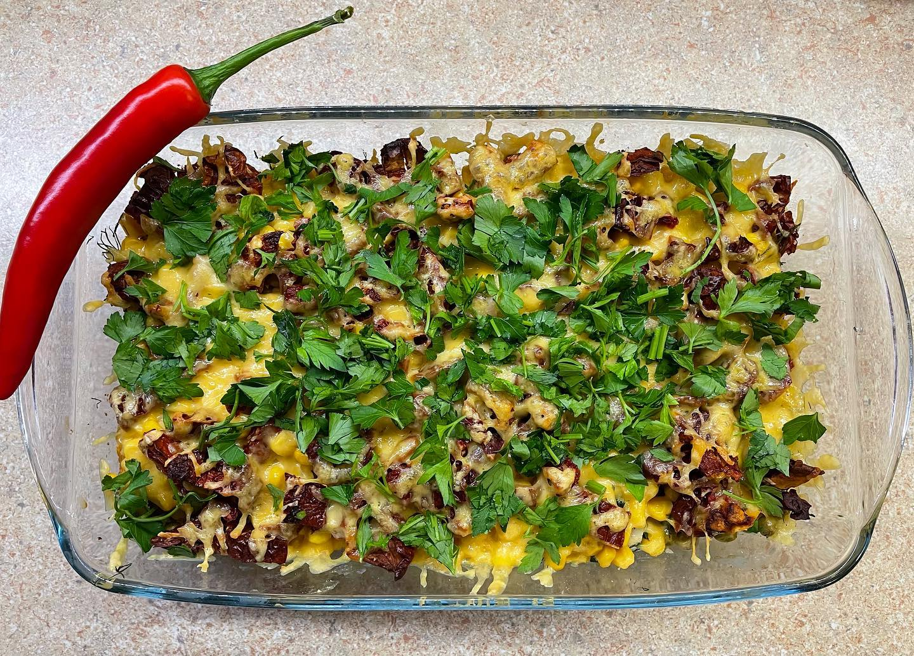

Zrobiłam zapiekankę na jutro 😀 🐟
Nie widać co pod spodem, ale zdradzę Wam, że jest tam ryż, filety rybne, groszek, kukurydza, suszone pomidory, koperek, cheddar i pietruszka 😀
Przyprawy jakich użyłam to sól, pieprz, curry oraz ognista mieszanka przypraw.
Miłego wieczoru 😉
#zdrowejedzenie #fitjedzenie #zapiekankarybna #warzywa #kolorowo #zdrowie #kolorowejedzenie #ryby #zapiekanka #fit #jedzonko